也紀念我們永遠的朋友 李士傑先生（Shih-Chieh Ilya Li）。
Gnome、KDE 與 Cinnamon 的平鋪視窗控制
問題在哪？
在約十年前的過去，電腦螢幕的解析度並不高，為了日常使用方便，大家用電腦時通常習慣於將視窗展開成「全螢幕」來工作。面對一台 640 * 480 解析度的螢幕，同時開著圖片瀏覽軟體與文書處理軟體繕打掃描稿，回憶起來還真是一件能充份鍛鍊人類修養的壯舉。
如果不將當前工作視窗展開到全螢幕，不管瀏覽網頁還是編輯圖片，那小小的螢幕都很折磨人，全螢幕工作法因此成為電腦使用者之間的主流。
不過隨著時代演進，我們眼前的狀況也漸漸地有了改變，過去看來奢侈無比的 1440 * 900 等級大解析度螢幕如今已成為電腦的標準配備。而面對如此充裕的螢幕空間，過去「全螢幕流」的工作方法恐怕也有了可被調整的餘地。
有什麼好調整的？請看下面的【圖1】。
▲ 圖1：用 1440 * 900 的螢幕來 google 網頁，結果就像這樣。右側的空白看起來毫無意義。有沒有什麼辦法解決他呢？
為了更好地利用巨大螢幕的空間，有些人會放棄使用全螢幕，而用多個較小的視窗代替。
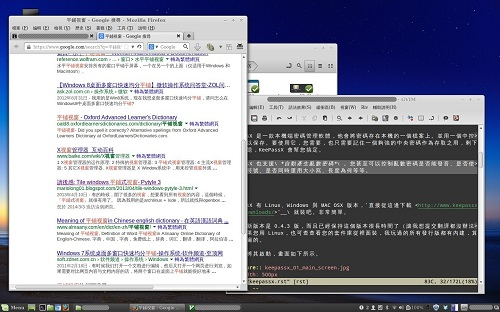
▲ 圖2：一邊搜網路一邊寫文章的示意圖。如此一來不但空間得以充份應用，也可以同時察看多個視窗中的資料。不過......
雖說【圖2】這種作法不錯，不過每次進入工作狀況前，都必須要手動調整視窗的大小與位置，這實在很煩。更別說如果調整得不夠仔細，視窗之間還會留下醜陋又無法用上的間隙，甚至還可能會讓視窗彼此互相遮蔽。用起來有各種各樣的不方便。
能不能簡單方便地把螢幕變成這樣呢：
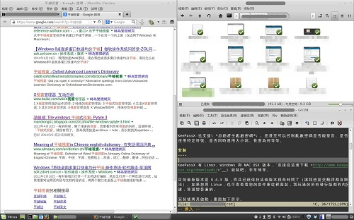
▲ 圖3：輕鬆地把視窗變成這樣？
如果您想這麼做，那麼「平鋪視窗」功能正是您所需要的。
平鋪視窗
平鋪（Tiling，也可譯成拼貼）是種很有意思......但一般使用者恐怕不太熟悉的視窗管理方式。簡單說來，「平鋪式視窗管理」的目標，是要讓所有視窗互不遮蔽，並共同分享螢幕上所有的可用空間。就像【圖3】所示的那樣。
為 求操作上的效率與自動化，平鋪視窗管理器通常並不允許使用者詳細指定視窗的大小位置（因為要佔滿全螢幕，而螢幕的總寬度與總高度是固定的；故改變任何一個 視窗的大小位置，都會連帶影響到其他視窗的大小與位置），取而代之，視窗管理器會自動協調計算每個視窗的大小，讓螢幕上的所有視窗共同佔滿所有可用空間， 且不會遮蔽住彼此。
在一個真正的平鋪視窗管理器中，如果您將左側視窗寬度加寬，右側的視窗也會因此自動縮小寬度，兩者之間既不會互相遮蓋，也不會留下難看的空隙，螢幕隨時隨地總是堆滿滿的，讓使用者能充份利用螢幕上的所有可用空間......
聽起來挺不錯的對嗎？
......雖然聽起來是不錯，但老實說吧，我也從沒認真用過一款純為平鋪而設計的視窗管理器。這是因為截至目前為止，Linux (X Window) 下的平鋪視窗管理器似乎都很難用預設值直接零設定上手，真要用之前，還得事先撰寫十分冗長的設定檔才能開始使用，用起來太過麻煩的緣故。
不過近幾年來，因應螢幕尺寸與螢幕解析度不斷加大，許多原本非平鋪邏輯的視窗管理器（如 KWin、Gnome-shell），也逐步加入了不同程度的平鋪支援，讓我們能有機會嘗嘗鮮。
本文打算向各位介紹一些常見於 X Window 桌面環境下，非平鋪視窗管理器中的平鋪功能！雖然功能不或許不甚完整，但方便易上手，隨取隨用就是他們的優點，大家來看看吧。
因為版面有限，本回就只介紹 Gnome、KDE 與 Cinnamon 三種環境，沒有任何歧視的意思，歡迎各位也補充更多資料。
Cinnamon 2.0 內建的平鋪控制
和 Linux Mint 16 一併推出的 Cinnamon 2.0 預設提供了簡單易用的平鋪操作。
請在桌面上拖曳任意視窗，往螢幕的四個邊或四個角移動，如此一來就能讓視窗重新黏在那些邊與角上。
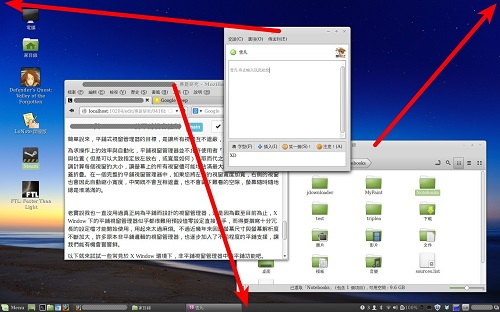
▲ 圖4：拖拉視窗移到邊與角上。
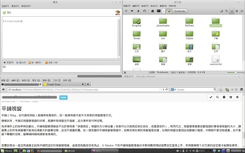
▲ 圖5：如此就能做出簡單的平鋪。注意此時最下方的應用程式列也會出現 | 記號，提示某些視窗正處於平鋪狀態。
雖然無法進行更複雜的鋪排，不過透過這種方式很簡單就能將螢幕空間分配開來。對於簡單的鋪排工作來說算是相當好用的。
如果在【圖 4】拖曳的時候同時按下 Ctrl 鍵，則視窗會被以 snap 模式放置。snap 模式的意思是說：假設兩個視窗一個是 snap 一個是全螢幕，則全螢幕視窗不會蓋住 snap 視窗，而會適應 snap 視窗的大小。
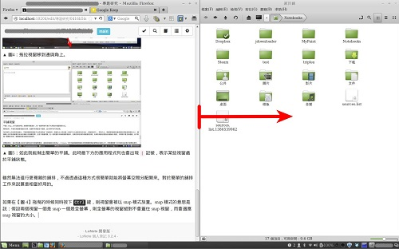
▲ 圖6：左邊的視窗設成全螢幕，右邊的視窗設成 snap 模式（底部應用程式列上會用 || 符號作為暗示）。然後手動拖曳邊緣，將右邊的視窗縮小......
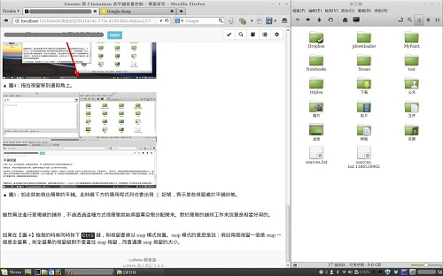
▲ 圖7：左邊的視窗會自動擴大，把空間補滿。
在只有兩個視窗時，snap 模式可以正常運作，不過當需要平鋪的視窗數量有三個以上時，這套運作邏輯就會變得非常詭異，在此不囉唆，各位試試就知。Cinnamon 在日後對 snap 模式應該還有不少可以效調的空間。
Cinnamon 外掛：gTile
預設的平鋪模式太過基本，或許有人會覺得不夠用。那麼就來裝點外掛吧！
gTile 是一款適用於 Cinnamon 1.8 以上的視窗平鋪用擴充程式，在 Cinnamon 的官網擴充程式列表中也相當受歡迎。
安裝方式如下：
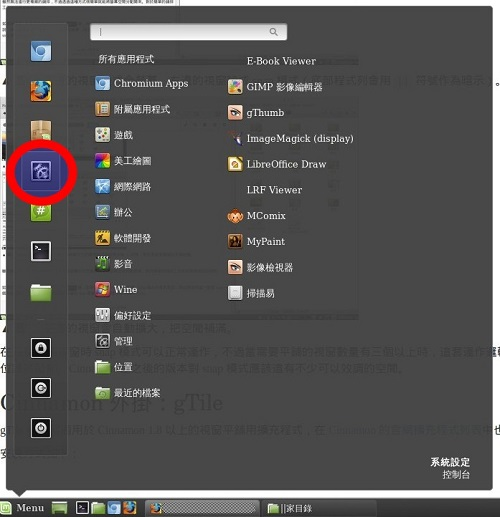
▲ 圖8：選擇「系統設定」
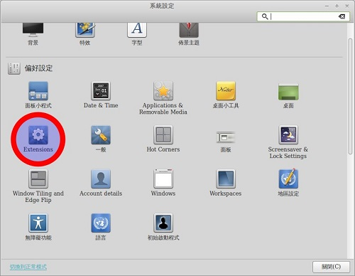
▲ 圖9：選擇 Extension 來安裝擴充套件。
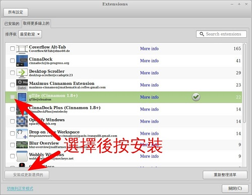
▲ 圖10：選擇後按安裝。
安裝好之後，切換到【已安裝】頁籤將這個擴充套件啟用。然後就能正式開始用了。
這個擴充套件的運用方法是按 Win + Space 來啟動控制面板。
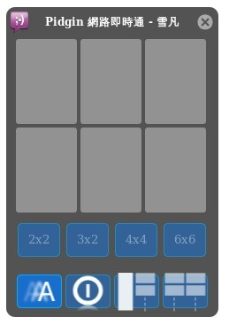
▲ 圖11：gTile 的控制面板。
面板上部的方磚型介面其實正對應到您的螢幕空間。請用滑鼠在這些方磚上點擊並畫出範圍，如此就可以手動將「當前焦點所在的視窗」，「重新佈署到螢幕的相應位置上」。
中間的 NxN 按鈕則可以設定上方磚塊的數量，方便您以不同的解析度進行佈局。
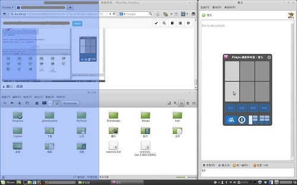
▲ 圖 12：gTile 控制面板會浮在目前焦點所在的視窗上方。透過面板上的方磚進行手動平鋪，可以重新調整「焦點視窗」在螢幕上的大小與位置。
繼續看【圖11】。面板左下角那兩顆按鈕，是「動畫」與「自動關閉」兩設定項的切換開關，外框發亮時表示該功能被啟用。在【圖11】中，左下角的按鈕被啟用，而左下靠中的按鈕則被關閉......兩者外觀差異不是很明顯。
面板右下角處的兩顆按鈕，則提供了自動平鋪功能，按下它們後，螢幕上所有視窗都會被自動重排整理妥當。
gTile 主打手動平鋪功能，雖然操作起來較為繁瑣，不過可以做到更有彈性的平鋪方式。其附帶的自動平鋪功能則快捷方便不費腦力，兩者都相當好用。
Gnome 3 內建的平鋪控制
Gnome 3 內建的平鋪控制非常薄弱，不過總是聊勝於無。
請按住視窗標題往左（或右）拖曳，直到碰觸螢幕旁邊（熱鍵 Win + ← 或 Win + →），如此就能將視窗自動擴展到半屏的大小。
......就是這樣，沒下文了，最多就平鋪兩個視窗。
雖然非平鋪視窗管理器本來就不能指望它的平鋪功能有多強，不過這樣還是太弱了些。為了彌補 Gnome-shell 平鋪功能不足，下面來看看 Gnome-shell 的外掛吧。
Gnome Shell 外掛：shellshape
前文中的 gTile 其實也有 Gnome-shell 版本的，不過 Gnome-shell 版本的 gTile 在我測試時無法正常工作，所以跳過。試試新玩意兒也不錯嘛。
對於 Gnome 3 使用者，這次我要推荐的是 shellshape。立刻去安裝吧。
Gnome-shell 的外掛只要用普通瀏覽器就能輕鬆安裝，所以請直接點開 shellshape 在 gnome-shell 的外掛網站的頁面，然後將頁面上的開關打開......
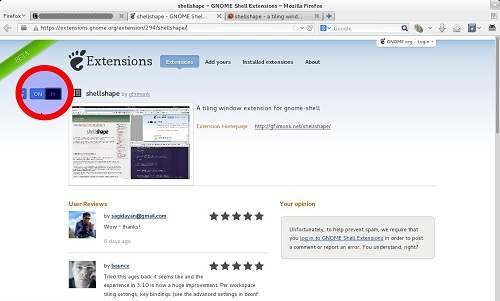
▲ 圖13：直接在網頁頁面上將開關調成 on，接著確認安裝即可。
您可以透過 gnome-tweak-tool 來察看外掛安裝的狀況，並切換外掛系統是開啟或關閉。
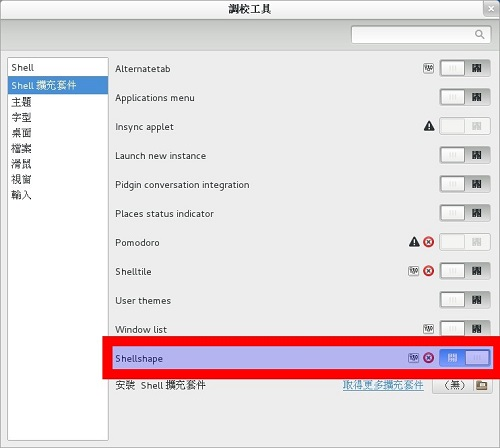
▲ 圖14：gnome-tweak-tool 的介面，可以在此調整外掛安裝的狀況以及啟用或否。不過一般時候您不用進來這裡調整，裝好之後，外掛應該就會自動啟用。
一旦您正確啟動 shellshape，就可以在 Gnome-shell 的介面右上角處看到 shellshape 的提示符號。
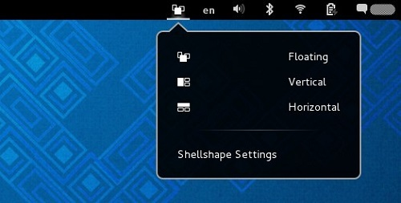
▲ 圖15：這是 shellshape 在 gnome-shell 中新加入的控制面板。如果有成功安裝，圖示就會自動出現。
您可以透過控制面板切換當前桌面模式，其中......
- Floating 表示使用「浮動顯示模式」。也就是不用平鋪的一般模式。
- Vertical 表示「左側單一窗格，右側多個窗格」。
- Horizontal 表示「上方單一窗格，下方多個窗格」
此處 Floating、Vertical、Horizontal 的設定，是每個虛擬桌面都獨一無二的。也就是說，您可以將某些虛擬桌面設為平鋪，某些則設為浮動；某些垂直平鋪，某些則水平平鋪，彈性很大。
不過這個面板沒啥大用，操作 shellshape 還是靠熱鍵比較方便。 完整熱鍵表請見 shellshape 官網。以下就大概講一下主要操作方式。
既然要平鋪，首先請先選擇 Vertical 或 Horizontal 兩種模式之一。切換模式的熱鍵為 Win + D 與 Win + G。如果要取消平鋪回歸浮動模式，則按 Win + F。在 QWERTY 鍵盤上，這三個鍵聚在一起應該不難記憶。
桌面被指定為平鋪模式後，新開的視窗不需要進行任何操作，就會被自動平鋪放好，如果您關掉一部份視窗，則其他視窗也會自動重新調節，無需您多加插手。
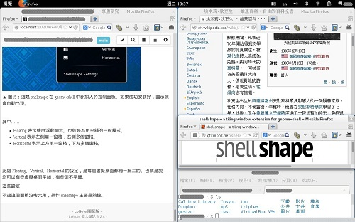
▲ 圖16：以 Vertical 模式顯示 4 個窗格的示意圖。最下方兩個窗格小了一點，因為我的螢幕解析度只有 1280 * 800。
您可以用滑鼠拖移視窗，將一個視窗移到另一個視窗上，如此就能快速交換視窗的位置。
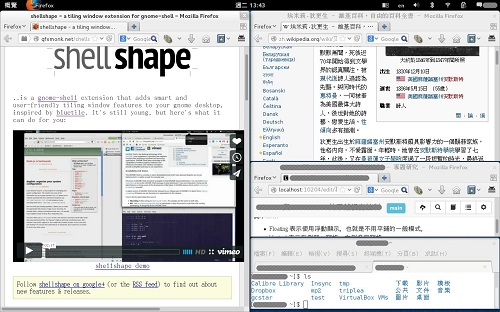
▲ 圖17：在【圖16】的狀況下，將右邊中間的窗格拖到左邊視窗上方，兩個窗格的位置於是立刻調換了。
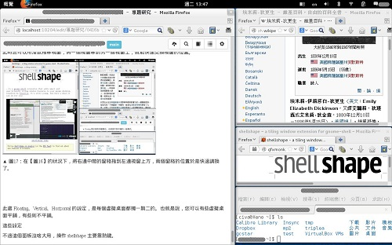
▲ 圖18：在【圖16】的狀況下，使用熱鍵 Win + L 與 Win + H 調整視窗左右比重。此處的熱鍵 L 與 H 是基於 vi 鍵位。
與 gTile 相比，shellshape 自動化的程度更高，每次新開視窗、關閉視窗、甚至視窗最小化時，都會自動重新計算螢幕的佈局，不需太多手動管理就是她的優點。
不過或許就因為比較複雜的關係，在我測試的 gnome-shell 3.8.4 上，有時會出現「部份視窗沒被平鋪」的 Bug。不過這並不是那種會導致電腦掛點需要重開機的惡性 Bug。此時只要切換一下平鋪模式或虛擬桌面，又或乾脆用 Alt + F2 → r → enter 重新運行 gnome-shell 就能輕鬆解決。
另外，有一些特殊的視窗類型無法被縮放超過某個程度，這些視窗被丟在平鋪桌面中時，有時也會導致桌面無法被正確平鋪好，在可行範圍內還是將這些特殊視窗丟到 Floating 桌面比較妥當。
看網路上的留言，聽說 shellshape 在 gnome-shell 3.10 上運作狀況很完美，這方面還請各位讀者自行試試吧。
如果您對 shellshape 不滿意，gnome-shell 擴充功能網站上還有其他平鋪視窗外掛程式可供您選用。不過今天就不介紹了。
KDE 4 內建的平鋪控制
再來是 KDE 單元！
KDE 4 內建的平鋪控制介於 Gnome 3 與 Cinnamon 2.0 之間，用法也完全相同，只是主視窗（最大的那個視窗）不能放在上方或下方，無法做出上下分割效果。只能做出左右分割。
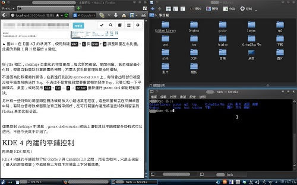
▲ 圖19：KDE 的平鋪視窗示意圖，主視窗（圖中左邊那個）無法放在最上方或最下方。（請與【圖5】對照）
KDE 的 KWin 視窗管理器很容易進行一些進階調整，因此您可以在這基礎上更加強化畫面效果。舉例來說，您可以將那些被平鋪的視窗全部設為「沒有邊框」......
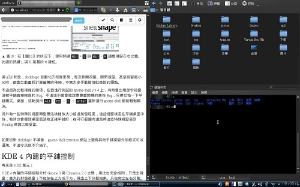
▲ 圖20：透過「沒有邊框」選項，徹底關閉在平鋪時沒有意義的邊框與標題列，如此一來不但省下更多顯示空間，連視窗周圍礙眼的焦點效果都自然消失了。請與【圖19】對比一下看看。
去掉邊框的設定方法為先選擇一個視窗→按 Alt + F3 叫出【視窗選單】，選擇【更多動作】→【沒有邊框】，如此就能將邊框去掉。
如果嫌隱藏與恢復視窗邊框的手續太過瑣碎麻煩，您還可以設定熱鍵。熱鍵設定方法是：啟動【系統設定】程式→【捷徑與手勢】→【全域鍵盤捷徑】頁籤→【KDE 組件】選單中選【KWin】→最後於下方設定【隱藏視窗邊框】欄位。
我把它設成 Win + W (Meta + W)，如此就能快速切換了。
KWin 外掛：kwin-tiling
基本的平鋪功能總嫌它不夠用，不夠自動。對於 KDE 環境來說，有沒有好用的外掛可以用呢？
這個嘛……看起來 KDE 用戶似乎不太在意平鋪這種事？總之在不把 KWin 換掉的前提下，我只找到一款外掛可用，也就是 KWin 的外掛 tiling (kwin-tiling)。這外掛是從 2013 年 8 月才開始開發，同年 10 月才公開推出，是一款超級新的外掛，真難想像 KDE 用戶居然可以忍上這麼久......
安裝方法為【系統設定】→【視窗行為】→【KWin 文稿】→【取得新文稿】，然後對 Tiling 項目選安裝。
這款外掛主打自動平鋪、自動去除視窗邊框、自動適應螢幕分割位置，目標很明顯是自動控制而非手動控制，而且支援的平鋪模式比之前介紹過的那幾款外掛都要來得多。
kwin- tiling 目前還在持續開發中，日後應該很值得期待。不過也因為實在太新了，在當前版本（1.4 版）中 Bug 還非常多，個人覺得還不到能推荐給一般使用者的程度，故此處不詳述使用方法。熱鍵與操作請見這一頁，您也可以到 GitHub 的原碼倉庫上提交問題與程式碼。
專欄總覽


E-Mail：contact@openfoundry.org Address：台北市南港區研究院路2段128號 中央研究院資訊科學研究所 . 隱私權條款. 使用條款